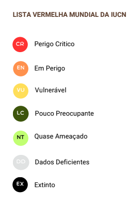
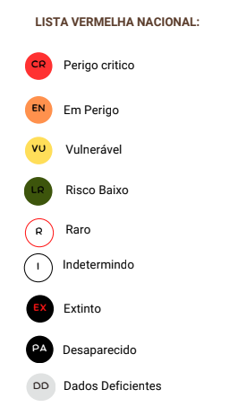

Descubra sobre Répteis em Cabo Verde
Lagartos Endêmicos e Tartarugas Marinhas
Principais termos utilizados na descrição de Répteis
Padrões de escamas: Examinar a disposição, forma e tamanho das escamas no corpo, cabeça e membros.
Coloração: Descrever a cor e o padrão da pele do réptil, incluindo quaisquer marcações distintas ou variações.
Medições morfométricas: Realizar medidas específicas de diferentes partes do corpo, como comprimento focinho-ventre, comprimento da cauda, largura da cabeça e dimensões dos membros.
Forma do corpo: Avaliar a forma geral e proporção do corpo do réptil.
Medidas:
- Comprimento focinho-ventre (CFV): Distância entre a ponta do focinho e a cloaca.
- Comprimento total: Medida da ponta do focinho até a ponta da cauda.
- Comprimento da cauda: Medida da cloaca até a ponta da cauda.
- Dimensões da cabeça: Medidas da largura, comprimento e altura da cabeça.
- Medições dos membros: Comprimentos dos membros anteriores e posteriores.
- Massa corporal: O peso do réptil, que pode indicar sua saúde geral.

